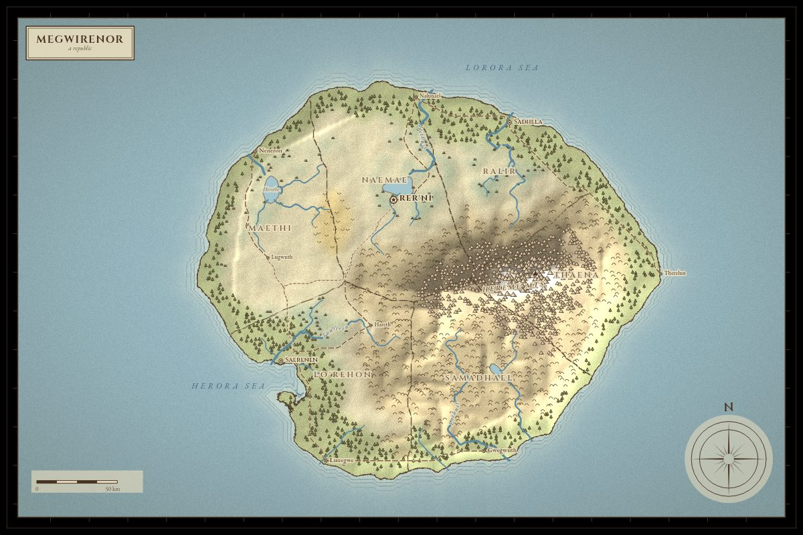
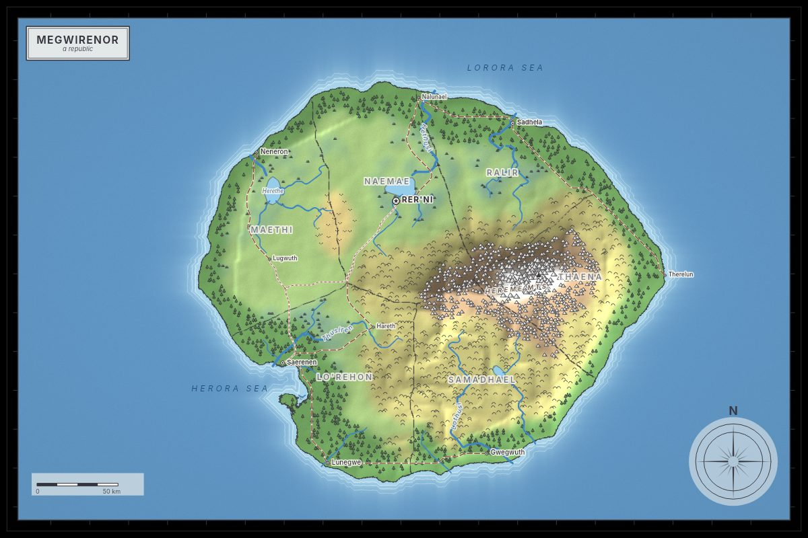
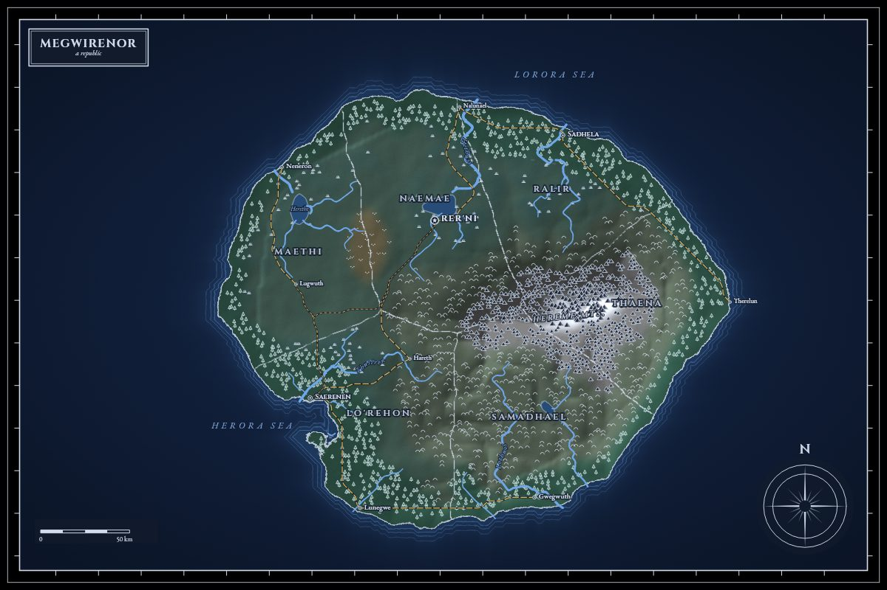
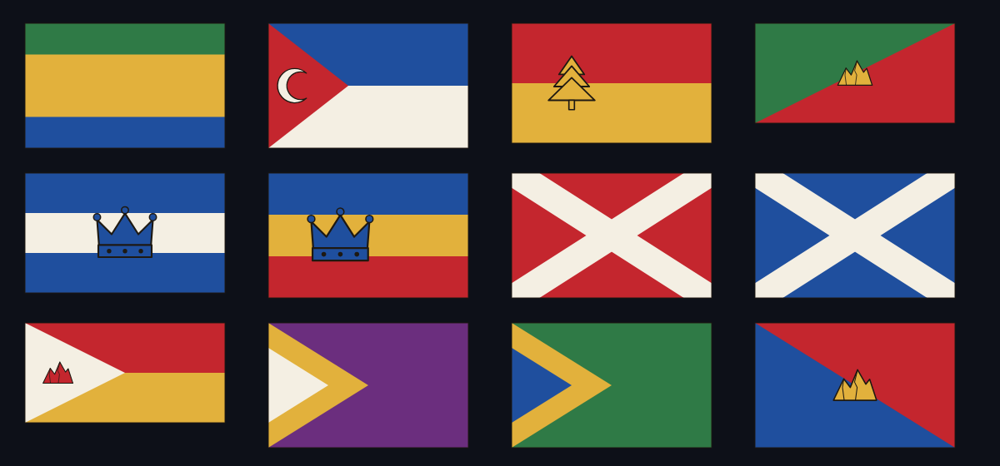
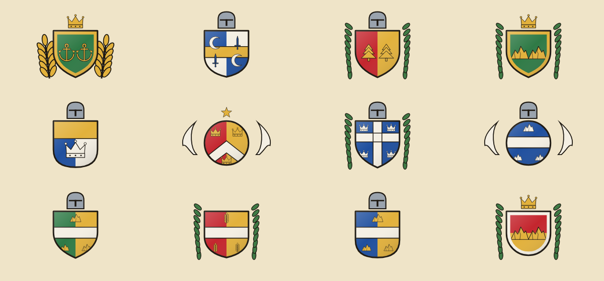
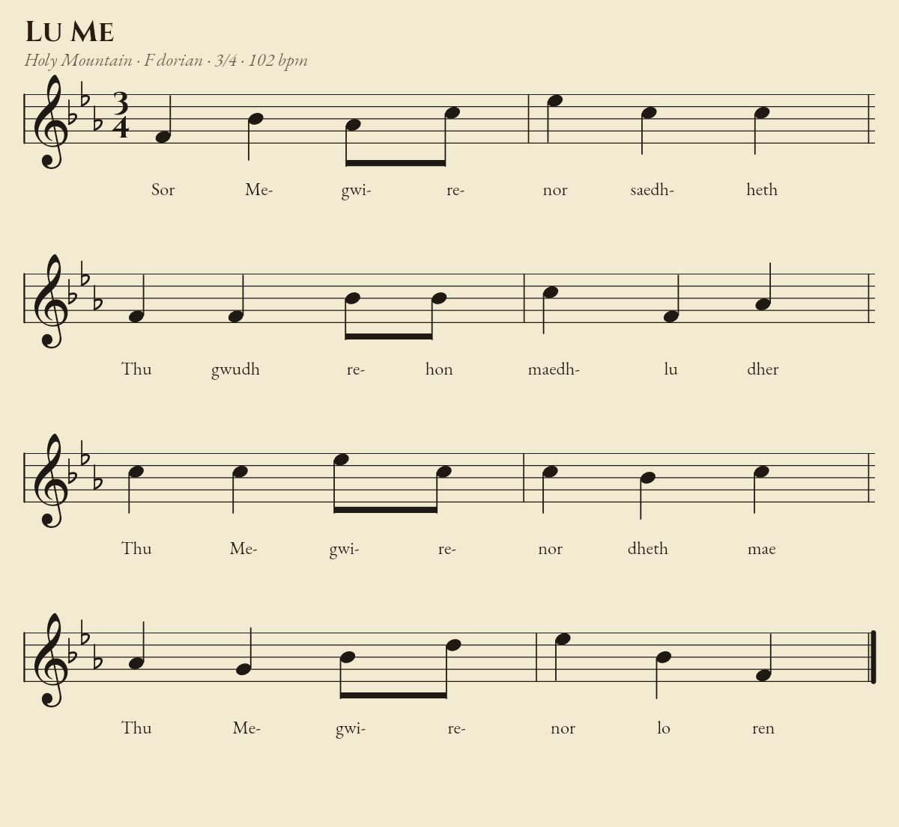

A real-looking map
Coastlines, rivers that flow downhill, mountain ranges, forests, roads between cities, provinces and neighbouring lands. Parchment, atlas or night style.
Type any word. Worldscape invents a tiny nation: a parchment map with rivers and roads, a flag, a coat of arms, a language behind every place name, a chronicle of its history and an anthem you can play. Print it as a poster.
Each part is generated from the same seed, so they fit together: the blue on the flag is the sea on the map, and the name of the capital means something in the language.
Coastlines, rivers that flow downhill, mountain ranges, forests, roads between cities, provinces and neighbouring lands. Parchment, atlas or night style.
Heraldry that follows the rules of tincture, with symbols drawn from the country itself: anchors for island nations, mountains for highlands, wheat for plains.
Ten phonologies, each with its own vocabulary. “Salodin” really means “Old Harbor”, and the glossary tells you so.
A dated history that mentions the actual rivers, peaks, ports and neighbours of your country: founding, floods, plagues, wars and a constitution.
Lyrics in the national tongue with a translation, a melody fitted to the syllables, engraved sheet music, in-browser playback and a MIDI download.
The whole country on one A-series sheet: map, facts, gazetteer, chronicle and sheet music. Download at 150 or 300 dpi, or print it straight from the browser.
Parchment for the tabletop, atlas for the classroom, night for the dark-mode crowd. Toggle labels, roads and borders, then download at 2400 × 1600.





Every flag and shield is built from real heraldic rules, then dressed with symbols from the land. The Symbols panel tells you what each colour stands for, using the country's own sea, mountains and rivers.
Twelve countries, twelve flags. None of them were drawn by hand.
Melodies are composed to fit the syllables of the lyrics, in a mode that matches the tongue: dorian for the windswept north, major for the melodic coast. The sheet music is engraved on the page, not pasted in.

Anything works: a name, a phrase, a date. The word is hashed into independent random streams, one per feature.
Terrain, rivers, borders, names, heraldry, history and music, all by plain algorithms. No model, no network, no tracking.
Send someone the seed and they see exactly your country. Your table, your readers or your class all get the same map.
Embed a flag in your Discord bot, a map in your wiki, an anthem in your game. No key, no limits worth worrying about, and responses with a seed are cached forever.
# a poster, a map, a flag, an anthem GET /api/poster?seed=saffron&width=1240 GET /api/map?seed=saffron&style=atlas GET /api/flag?seed=saffron&width=600 GET /api/anthem?seed=saffron # MIDI GET /api/country?seed=saffron # JSON # markdown 
Yes. It is MIT-licensed, has no account, no ads and no API key. The generator runs entirely in your browser, so it also works offline once loaded.
No. Worldscape is plain algorithms: noise for terrain, flood-fill for rivers and borders, templates and grammars for names and history, and rule-based composition for the music. That is why the same seed gives the same country on every device.
Yes, including commercially. Maps, flags, poster and anthem are yours. A mention is nice but not required. The fonts are open-source under the SIL Open Font License.
Yes, within one engine version. A rare future version could change the output; the API reports the version in the X-Worldscape-Engine header and tests freeze the current output.
Not directly, but seeds are cheap. Hit “Surprise me” a few times, save the ones you like with the star, and share the words.